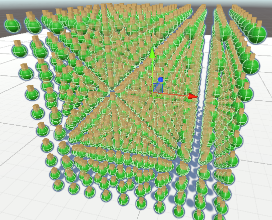

Fluidization Simulator
Dissertation project exploring real-time hybrid-state simulation in Unity through a custom physics-based mass-spring system.

Overview
Fluidization Simulator is my dissertation project, focused on simulating the binary solid/fluid-like behavior of a reactive particulate medium in Unity. Rather than attempting a conventional water simulation, the project explores how a semi-solid material can shift between stable and fluidized states while remaining interactive in real time.
My Role
I designed and implemented the simulation system, including the custom physics approach, state transition behavior, and interactive object support. The project required technical research, experimentation, and iterative tuning to balance responsiveness, stability, and performance.
Core Systems
- Mass-Spring Lattice: Built from Rigidbody-based particles connected through SpringJoints to create a deformable simulation bed.
- Hybrid State Behavior: The system can transition between more stable and more fluid-like states in real time.
- Interactive Objects: The simulation supports floating, sinking, and object interaction depending on the current state.
- Runtime Tuning: Parameters were exposed and adjusted during testing to support iteration and control.
Technical Focus
A major focus of the project was building a fully controllable Unity-native solution rather than depending on black-box fluid plugins. This allowed the simulation to prioritize interactivity, visibility of system behavior, and direct manipulation of physical parameters.
Design Challenges
The central challenge was balancing convincing material behavior with runtime performance and system clarity. The project needed to support both structural stability and destabilized motion while remaining responsive enough to demonstrate the concept in a real-time environment.
Development Status
The simulator demonstrates a successful first-pass implementation of hybrid-state behavior and interactive object support, while also leaving room for future optimization and visual refinement.
Simulation Structure / Lattice View

Development view of the particle lattice structure used to build the simulation bed. This image highlights the system’s underlying mass-spring organization and the technical structure that supports its state transitions.